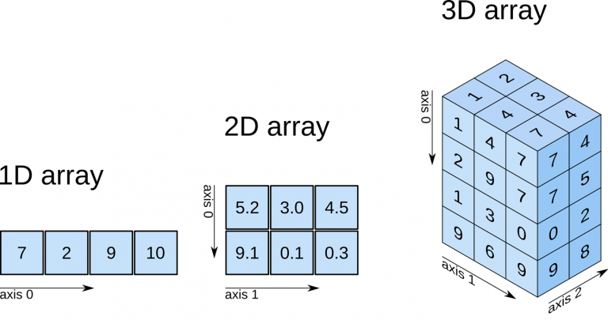

Arreglos n-dimensionales con NumPy
Contenido
17. Arreglos n-dimensionales con NumPy¶
NumPy es un paquete de computación científica con Python que provee:
Un objecto contenedor muy versatil: arreglo N-dimensional
ndarrayFunciones capaces de hacer broadcasting
Módulos para algebra lineal, Transformada de Fourier, generación de número aleatorios, entre otros
Herramientas para integrar código C/C++
Instalación
Con nuestro ambiente conda activado:
conda install numpy
Esto instalará numpy y las librerías de bajo nivel BLAS y MKL
Luego importamos usando
import numpy as np
print("Version: ", np.__version__)
Version: 1.21.2
17.1. Objeto ndarray (alias array)¶
Una lista de Python es un tipo de arreglo donde cada elemento puede ser de tipo diferente
Advertencia
En general es muy ineficiente hacer cálculos numéricos usando listas
Para cálculos numéricos eficientes utilizaremos el objeto ndarray de NumPy, que corresponde a un arreglo n-dimensional de tipo fijo
La siguiente figura muestra arreglos de Numpy de una, dos y tres dimensiones, respectivamente
{kind=link}
Podemos crear un ndarray a partir de
una lista o tupla usando
np.arrayfunciones generadoras de NumPy, por ejemplo
np.linspace,np.zeros, etcun fichero, por ejemplo usando
np.genfromtxt(aunque es preferible utilizarpandasen estos casos
Veamos un ejemplo de creación a partir de lista:
# Supongamos que tenemos la siguiente lista de listas
L = [[0, 1, 2], [3, 4, 5]]
f"L es de tipo {type(L)}"
"L es de tipo <class 'list'>"
# Podemos transformarla a ndarray con
A = np.array(L)
A
array([[0, 1, 2],
[3, 4, 5]])
f"A es de tipo {type(A)}"
"A es de tipo <class 'numpy.ndarray'>"
Atributos básicos de un ndarray
El atributo
ndimes un entero que nos indica el número de dimensiones o ejes del arregloEl atributo
shapees una tupla de entero que nos indica el tamaño del arreglo en cada una de sus dimensionesEl atributo
dtypenos indica el tipo del arreglo
En el caso anterior
f"A tiene {A.ndim} dimensiones"
'A tiene 2 dimensiones'
len(A.shape) == A.ndim
True
for d in range(A.ndim):
print(f"La dimensión {d} tiene largo {A.shape[d]}")
La dimensión 0 tiene largo 2
La dimensión 1 tiene largo 3
f"El arreglo es de tipo {A.dtype}"
'El arreglo es de tipo int64'
Los tipos de dato estándar de NumPy son:
Enteros: int8, int16, int32, int64
Enteros sin signo: uint8, uint16, uint32, uint64
Flotantes (reales): float16, float32, float64, float128
Números complejos: complex64, complex128, complex256
Booleanos: Bool
Podemos forzar el tipo al momento de crear usando el argumento dtype
np.array(L, dtype=np.int16)
array([[0, 1, 2],
[3, 4, 5]], dtype=int16)
np.array(L, dtype=np.float32)
array([[0., 1., 2.],
[3., 4., 5.]], dtype=float32)
Funciones generadoras de ndarray
Existen algunas funciones de NumPy que permiten crear directamente arreglos con ciertas propiedades
Algunos ejemplos útiles son:
np.zeros(shape=(2, 3), dtype=np.int64) # Arreglo lleno de ceros
array([[0, 0, 0],
[0, 0, 0]])
np.ones(shape=(2, 3), dtype=np.float32) # Arreglo lleno con unos
array([[1., 1., 1.],
[1., 1., 1.]], dtype=float32)
np.full(shape=(2, 3), fill_value=np.pi) # Arreglo lleno con un valor arbitrario
array([[3.14159265, 3.14159265, 3.14159265],
[3.14159265, 3.14159265, 3.14159265]])
También existen versiones de estas funciones que copian el tamaño y tipo de otro ndarray
np.zeros_like(A)
array([[0, 0, 0],
[0, 0, 0]])
Las siguientes funciones son muy útiles cuando necesitamos crear un rango lineal o logarítmico usando
Se especifica el inicio, el fin y el paso o cantidad de elementos:
np.arange(start=0, stop=5, step=0.5)
array([0. , 0.5, 1. , 1.5, 2. , 2.5, 3. , 3.5, 4. , 4.5])
np.linspace(start=0, stop=10, num=11)
array([ 0., 1., 2., 3., 4., 5., 6., 7., 8., 9., 10.])
np.logspace(start=-1, stop=1, num=5)
array([ 0.1 , 0.31622777, 1. , 3.16227766, 10. ])
17.2. Manipulación de matrices y vectores¶
Es usual que antes de operar un ndarray necesitemos cambiar su tamaño o número de dimensiones
Algunas operaciones típicas para modificar la forma de un arreglo son: reshape, tile, repeat, ravel y transpose
reshape reorganice las dimensiones de un arreglo pero debe preservar el tamaño
A = np.arange(6)
A
array([0, 1, 2, 3, 4, 5])
np.reshape(A, (3, 2)) # Convierte 6 a 3x2
array([[0, 1],
[2, 3],
[4, 5]])
np.reshape(A, (2, 3)) # Convierte 6 a 2x3
array([[0, 1, 2],
[3, 4, 5]])
tile repite el arreglo en una dirección dada
np.tile(A, (4, 1)) # Repite 4 veces en la dirección de las filas
array([[0, 1, 2, 3, 4, 5],
[0, 1, 2, 3, 4, 5],
[0, 1, 2, 3, 4, 5],
[0, 1, 2, 3, 4, 5]])
np.tile(A, (1, 2)) # Repite 2 veces en la dirección de las columnas
array([[0, 1, 2, 3, 4, 5, 0, 1, 2, 3, 4, 5]])
repeat repite cada elemento en una dirección o eje dado
np.repeat(A, 2) # Cada elemento aparece dos veces
array([0, 0, 1, 1, 2, 2, 3, 3, 4, 4, 5, 5])
# Cada elemento/fila aparece dos veces en la dirección de las columnas
np.repeat(A.reshape(3, 2), 2, axis=1)
array([[0, 0, 1, 1],
[2, 2, 3, 3],
[4, 4, 5, 5]])
ravel es una función que aplana el ndarray y retorna un arreglo de una dimensión
# Convierte una matriz de 3x3 en un arreglo de 9
np.ravel(np.zeros(shape=(3, 3)))
array([0., 0., 0., 0., 0., 0., 0., 0., 0.])
transpose puede utilizarse para intercambiar la posición de los ejes/dimensiones de un ndarray
Tiene el mismo significado de la trasposición matricial

Por ejemplo:
A = np.arange(9).reshape(3, 3)
A
array([[0, 1, 2],
[3, 4, 5],
[6, 7, 8]])
np.transpose(A) # Equivalente a A.transpose() o A.T
array([[0, 3, 6],
[1, 4, 7],
[2, 5, 8]])
transpose puede usarse en ndarrays de cualquier dimensionalidad
Podemos usar el argumento axes para especificar cuales dimensiones se van a intercambiar
(Opcionalmente podemos usar la función np.swapaxes() para obtener le mismo efecto)
A = np.arange(8).reshape(2, 2, 2)
A
array([[[0, 1],
[2, 3]],
[[4, 5],
[6, 7]]])
np.transpose(A, axes=(0, 2, 1))
array([[[0, 2],
[1, 3]],
[[4, 6],
[5, 7]]])
Agregar dimensiones a un arreglo
En algunas ocasiones nos interesará extender un arreglo, agregándole dimensiones
Consideremos el siguiente arreglo unidimensional
A = np.array([0, 1, 2, 3, 4])
f"Dimensión: {A.ndim}, Tamaño: {A.shape}"
'Dimensión: 1, Tamaño: (5,)'
Como vimos antes podemos agregar una dimensión usando reshape, pero otra forma más simple es usando np.newaxis (un alias de None)
Si queremos agregarle una dimensión al arreglo anterior podemos hacerlo a la derecha o a la izquierda
Por ejemplo agregarle una dimensión a la derecha creará una matriz de \(N\times1\) o vector columna
B = A[:, np.newaxis]
f"Dimensión: {B.ndim}, Tamaño: {B.shape}"
'Dimensión: 2, Tamaño: (5, 1)'
B
array([[0],
[1],
[2],
[3],
[4]])
Mientras que agregarle una dimensión a la izquierda creará una matriz de \(1\times N\) o vector fila
C = A[np.newaxis, :]
f"Dimensión: {C.ndim}, Tamaño: {C.shape}"
'Dimensión: 2, Tamaño: (1, 5)'
C
array([[0, 1, 2, 3, 4]])
Algunas operaciones útiles para combinar arreglos son: concatenate, vstack, hstack
concatenate es más general que las dos últimas
A = np.arange(5).reshape(1, 5)
B = np.ones(shape=(1, 5))
A, B
(array([[0, 1, 2, 3, 4]]), array([[1., 1., 1., 1., 1.]]))
np.concatenate((A, B), axis=0) # Combinar en eje filas
array([[0., 1., 2., 3., 4.],
[1., 1., 1., 1., 1.]])
np.concatenate((A, B), axis=1) # Combinar en eje columnas
array([[0., 1., 2., 3., 4., 1., 1., 1., 1., 1.]])
np.vstack((A, B)) # Combina siempre en fila
array([[0., 1., 2., 3., 4.],
[1., 1., 1., 1., 1.]])
np.hstack((A, B)) # Combina siempre en columna
array([[0., 1., 2., 3., 4., 1., 1., 1., 1., 1.]])
17.3. Indexación y slicing¶
Al igual que otros contenedores de Python los ndarray soportan slicing
Nota
Slicing es crear una arreglo a partir de una indexación sobre otro arreglo
Sea por por ejemplo:
L = [[0, 1, 2], [3, 4, 5]]
A = np.array(L)
A
array([[0, 1, 2],
[3, 4, 5]])
Para acceder al elemento en la segunda fila y primera columna usaríamos
L[1][0]
3
En cambio en Numpy utilizamos
A[1, 0]
3
El ndarray nos da mucha flexibilidad para hacer slicing
A[:, 1] # Retorna la segunda columna
array([1, 4])
A[0, :] # Retorna la primera fila
array([0, 1, 2])
A[1, ::2] # Retorna los elementos de la primera fila y columnas pares
array([3, 5])
A[-1, -2] # Retorna los elementos de la ultima fila y penultima columna
4
También podemos usar arreglos de enteros para indexar otro arreglo (fancy indexing)
ix = np.array([0, 0, 1])
iy = np.array([0, 1, 1])
A[ix, iy] # Elementos [0,0], [0,1] y [1,1]
array([0, 1, 4])
También podemos indexar usando un arreglo de booleanos
A = np.array([0, 2, 1, 3, 4])
B = np.array([True, False, False, True, True])
display(A[B])
array([0, 3, 4])
La siguiente figura muestra de forma esquemática varios ejemplos de slices

Advertencia
Algunas operaciones sobre arreglos no hacen copias (usan referencias)
En particular cuando hacemos un slice, estamos modificando el arreglo original
A = np.arange(100).reshape(10, 10)
B = A
B is A
True
Si modifico A se ve reflejado en B
A[:5, :5] = 100
B
array([[100, 100, 100, 100, 100, 5, 6, 7, 8, 9],
[100, 100, 100, 100, 100, 15, 16, 17, 18, 19],
[100, 100, 100, 100, 100, 25, 26, 27, 28, 29],
[100, 100, 100, 100, 100, 35, 36, 37, 38, 39],
[100, 100, 100, 100, 100, 45, 46, 47, 48, 49],
[ 50, 51, 52, 53, 54, 55, 56, 57, 58, 59],
[ 60, 61, 62, 63, 64, 65, 66, 67, 68, 69],
[ 70, 71, 72, 73, 74, 75, 76, 77, 78, 79],
[ 80, 81, 82, 83, 84, 85, 86, 87, 88, 89],
[ 90, 91, 92, 93, 94, 95, 96, 97, 98, 99]])
Modificaciones en subarreglos (vistas) también son referenciadas
A = np.arange(100).reshape(10, 10)
B = A[:5, :5]
B is A
False
B[:, :] = 100
A
array([[100, 100, 100, 100, 100, 5, 6, 7, 8, 9],
[100, 100, 100, 100, 100, 15, 16, 17, 18, 19],
[100, 100, 100, 100, 100, 25, 26, 27, 28, 29],
[100, 100, 100, 100, 100, 35, 36, 37, 38, 39],
[100, 100, 100, 100, 100, 45, 46, 47, 48, 49],
[ 50, 51, 52, 53, 54, 55, 56, 57, 58, 59],
[ 60, 61, 62, 63, 64, 65, 66, 67, 68, 69],
[ 70, 71, 72, 73, 74, 75, 76, 77, 78, 79],
[ 80, 81, 82, 83, 84, 85, 86, 87, 88, 89],
[ 90, 91, 92, 93, 94, 95, 96, 97, 98, 99]])
Si queremos evitar este comportamiento se puede forzar la creación de una copia con el método copy()
B = A.copy()
A[0, 0] = 0
B[0]
array([100, 100, 100, 100, 100, 5, 6, 7, 8, 9])
Ver también
Continua a la siguiente página para aprender sobre las operaciones aritméticas que podemos hacer con ndarrays